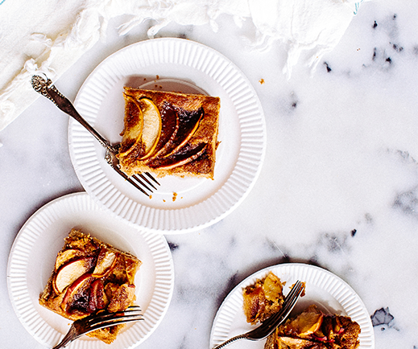

Bananas Foster Ice Cream Cake
If you're looking for decadence, look no further – you've found the Holy Grail of desserts. Honestly, this cake makes you wonder why Bananas Foster hasn't always been served on top of ice cream cake.


Raspberry & Cream Frozen Yogurt Pie
35 mins | 78
Giant Ice Cream Sandwich
20 mins | 356

Dark Chocolate Crunch Ice Cream Sandwich Cake
15 mins | 167
Bananas Foster Ice Cream Cake
A delicious banana foster cream cake perfect for any occasion.

About the Chef
Karen Gray is a renowned chef with over 20 years of experience...